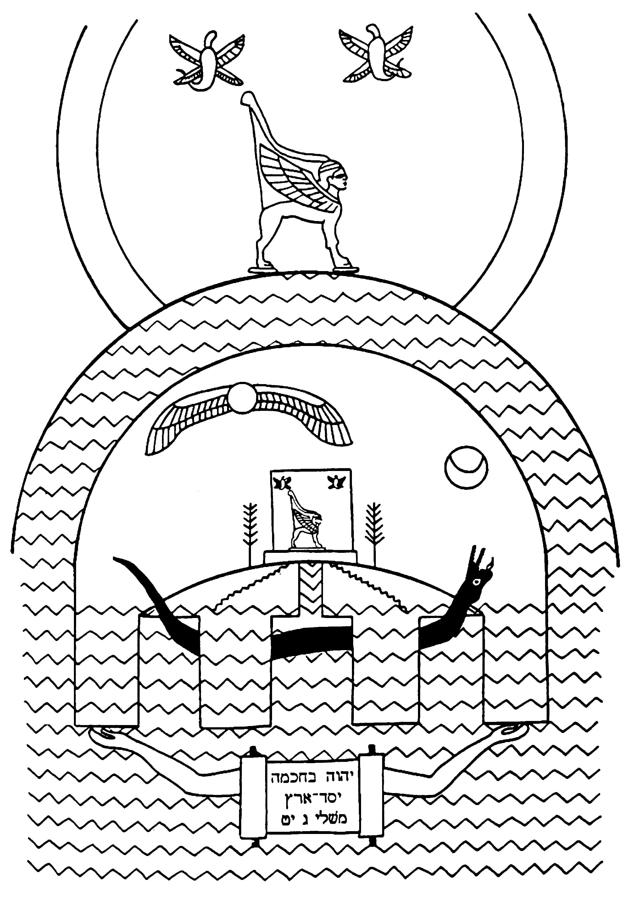

Os autores bíblicos retrataram a terra seca como um disco cercado por e apoiado sobre as águas.The biblical authors portrayed the dry land as a disc surrounded by and resting on the waters.
Ela está erguida sobre pilares que Deus sustenta pelo seu poder.It is set up on pillars that God upholds by his power.
A terra seca frequentemente simboliza salvação, mais notavelmente, em Gênesis 1 e na narrativa do Êxodo.The dry land often symbolizes salvation, most notably, in Genesis 1 and the Exodus narrative.
A Terra SecaThe Dry Land
Gênesis 1:9-10 NASBGenesis 1:9-10 NASB
9 Então Deus disse: “Que as águas abaixo dos céus se reúnam em um só lugar, e que a terra seca apareça”; e assim foi. 10 E Deus chamou a terra seca de terreno, e a reunião das águas ele chamou de mares, e Deus viu que era bom.9 Then God said, “Let the waters below the heavens be gathered into one place, and let the dry ground appear”; and it was so. 10 And God called the dry ground land, and the gathering of the waters he called seas, and God saw that it was good.
Esta passagem nos dá uma imagem mental das águas recuando de um monte de terra seca e se reunindo em águas ao redor dele. As seguintes frases bíblicas pressupõem que estamos familiarizados com esta imagem.This passage gives us a mental picture of the waters receding from a mound of dry land and gathering into waters around it. The following biblical phrases assume we are familiar with this picture.
As Extremidades/Bordas do TerrenoThe Ends/Edges of the Land
Salmos 19:1, 4 Tradução do InstrutorPsalm 19:1, 4 Instructor's Translation
1 Os céus declaram a glória de Deus, e a cúpula declara a obra das suas mãos. ... 4 A sua linha saiu por todo o terreno e a sua fala até a borda do mundo.1 The heavens declare the glory of God, and the dome declares the work of his hands. ... 4 Their line has gone out through all the land and their utterance to the edge of the world.
Daniel 4:10-11 NASB*Daniel 4:10-11 NASB*
10 Ora, estas eram as visões na minha mente enquanto eu estava deitado na minha cama: eu estava olhando, e eis que havia uma árvore no meio do terreno e a sua altura era grande. 11 A árvore cresceu e se tornou forte, e a sua altura alcançou o céu, e era visível até o fim de todo o terreno. *Palavras-chave Adaptadas pelo Professor Veja também Isaías 26:15; Isaías 41:9; Jeremias 16:19; Salmo 19:4; Salmo 48:10; Salmo 65:5; Salmo 67:7;10 Now these were the visions in my mind as I lay on my bed: I was looking, and behold, there was a tree in the midst of the land and its height was great. 11 The tree grew large and became strong, and its height reached to the sky, and it was visible to the end of all the land. *Key Words Adapted by Teacher See also Isaiah 26:15; Isaiah 41:9; Jeremiah 16:19; Psalm 19:4; Psalm 48:10; Psalm 65:5; Psalm 67:7;
Jó 28:24; Jó 37:3; Jó 38:13; Daniel 4:11; Atos 13:47Job 28:24; Job 37:3; Job 38:13; Daniel 4:11; Acts 13:47
Os Quatro Cantos do Terreno e os Quatro Ventos dos CéusThe Four Corners of the Land and the Four Winds of the Heavens
Isaías 11:12 NASBIsaiah 11:12 NASB
E ele levantará um estandarte para as nações e reunirá os banidos de Israel, e reunirá os dispersos de Judá dos quatro cantos da terra.And he will lift up a standard for the nations and assemble the banished ones of Israel, and will gather the dispersed of Judah from the four corners of the earth.
Veja também Ezequiel 7:2; Zacarias 2:10; Zacarias 6:5; Apocalipse 7:1 Nesta imagem do mundo, o disco do terreno está suspenso sobre as águas abissais escuras abaixo.See also Ezekiel 7:2; Zechariah 2:10; Zechariah 6:5; Revelation 7:1 In this world picture, the land disc is suspended over the dark abysmal waters below.
Salmos 24:1-2 NASBPsalm 24:1-2 NASB
1 O terreno é do SENHOR, e tudo o que ele contém, o mundo, e os que nele habitam. 2 Pois ele o fundou sobre os mares e o estabeleceu sobre os rios.1 The land is the LORD’S, and all it contains, the world, and those who dwell in it. 2 For he has founded it upon the seas and established it upon the rivers.
Salmos 136:5-6 NASBPsalm 136:5-6 NASB
5 [Dêem graças] àquele que fez os céus com habilidade, pois a sua benignidade é eterna; 6 àquele que estendeu o terreno acima das águas, pois a sua benignidade é eterna.5 [Give thanks] to him who made the heavens with skill, for his lovingkindness is everlasting; 6 to him who spread out the land above the waters, for his lovingkindness is everlasting.
Êxodo 20:4 NASBExodus 20:4 NASB
Você não fará para si um ídolo, ou qualquer semelhança do que está no céu acima ou no terreno debaixo ou na água debaixo da terra. As Águas que Cercam o Disco do TerrenoYou shall not make for yourself an idol, or any likeness of what is in heaven above or on the land beneath or in the water under the earth. The Waters Surrounding the Land Disc
Provérbios 8:27-30 NASBProverbs 8:27-30 NASB
27 Quando ele estabeleceu os céus, eu [a Sabedoria] estava lá, quando ele inscreveu um horizonte na face do abismo, 28 quando ele firmou os céus acima, quando as fontes do abismo se fixaram, 29 quando ele estabeleceu para o mar o seu limite para que a água não transgredisse o seu comando, quando ele demarcou os fundamentos do terreno; 30 então eu estava ao seu lado, como mestre artífice; e eu era diariamente o seu deleite, alegrando-me sempre diante dele ...27 When he established the heavens, I [Wisdom] was there, when he inscribed a horizon on the face of the deep, 28 when he made firm the skies above, when the springs of the deep became fixed, 29 when he set for the sea its boundary so that the water would not transgress his command, when he marked out the foundations of the land; 30 then I was beside him, as a master workman; and I was daily his delight, rejoicing always before him ...
Jó 26:10-13 NASBJob 26:10-13 NASB
10 Ele inscreveu um círculo/horizonte na superfície das águas no limite da luz e das trevas. 11 As colunas do céu tremem e se espantam com a sua repreensão. 12 Ele aquietou o mar com o seu poder, e pelo seu entendimento ele despedaçou Raabe. 13 Pelo seu sopro os céus se limpam; a sua mão perfurou a serpente fugitiva.10 He has inscribed a circle/horizon on the surface of the waters at the boundary of light and darkness. 11 The pillars of heaven tremble and are amazed at his rebuke. 12 He quieted the sea with his power, and by his understanding he shattered Rahab. 13 By his breath the heavens are cleared; his hand has pierced the fleeing serpent.
Isaías 40:21-22 NASBIsaiah 40:21-22 NASB
21 Você não sabe? Você não ouviu? Não foi declarado a você desde o princípio? Você não entendeu os fundamentos da terra? 22 É ele que se assenta acima do círculo da terra, e os seus habitantes são como gafanhotos, que estende os céus como uma cortina e os espalha como uma tenda para habitar. Estas passagens não descrevem uma esfera flutuando no espaço, como poderíamos pensar. Em vez disso, elas falam sobre a linha do horizonte (Jó 26) ou o disco redondo do terreno cercado por águas (Pv. 8; Is. 40).21 Do you not know? Have you not heard? Has it not been declared to you from the beginning? Have you not understood the foundations of the earth? 22 It is he who sits above the circle of the earth, and its inhabitants are like grasshoppers, who stretches out the heavens like a curtain and spreads them out like a tent to dwell in. These passages do not describe a sphere floating in space, like we might think of. Rather they are talking about the horizon line (Job 26) or the round disc of the land surrounded by waters (Prov. 8; Isa. 40).
Em muitos salmos, a terra seca de Gênesis 1 é identificada com a provisão de salvação de Deus das águas do caos.In many psalms, the dry land of Genesis 1 is identified with God’s provision of salvation from the waters of chaos.
Salmos 18:2-3 NASBPsalm 18:2-3 NASB
2 O Senhor é a minha rocha e a minha fortaleza e o meu libertador, o meu Deus, a minha rocha, em quem me refugio; o meu escudo e o chifre da minha salvação, a minha fortaleza. 3 Invoco o Senhor, que é digno de louvor, e sou salvo dos meus inimigos.2 The Lord is my rock and my fortress and my deliverer, my God, my rock, in whom I take refuge; my shield and the horn of my salvation, my stronghold. 3 I call upon the Lord, who is worthy to be praised, and I am saved from my enemies.
Salmos 89:8-11 NASBPsalm 89:8-11 NASB
8 Ó SENHOR Deus dos exércitos, quem é como você, ó poderoso SENHOR? A sua fidelidade também o cerca. 9 Você governa o inchaço do mar; quando as suas ondas se levantam, você as acalma. 10 Você mesmo esmagou Raabe como um dos mortos; você dispersou os seus inimigos com o seu braço poderoso. 11 Os céus são seus, a terra também é sua; o mundo e tudo o que ele contém, você os fundou.8 O LORD God of hosts, who is like you, O mighty LORD? Your faithfulness also surrounds you. 9 You rule the swelling of the sea; when its waves rise, you still them. 10 You yourself crushed Rahab like one who is slain; you scattered your enemies with your mighty arm. 11 The heavens are yours, the earth also is yours; the world and all it contains, you have founded them.
Salmos 104:1-9 reconta a história da criação, do dilúvio e da re-criação de Gênesis 1 e 6-8 usando as imagensPsalm 104:1-9 retells the story of creation, flood, and re-creation from Genesis 1 and 6-8 by using the imagery
de águas subindo ou recuando do terreno.of waters rising or receding from the land.
Salmos 104:1-9 NASBPsalm 104:1-9 NASB
1 Bendiga o SENHOR, ó minha alma! Ó SENHOR meu Deus, tu és muito grande; estás vestido de esplendor e majestade, 2 cobrindo-te de luz como com um manto, estendendo o céu como uma cortina de tenda. 3 Ele coloca as vigas dos seus aposentos superiores nas águas; ele faz das nuvens a sua carruagem; ele caminha sobre as asas do vento; 4 ele faz dos ventos os seus mensageiros, do fogo flamejante os seus ministros. 5 Ele estabeleceu a terra sobre os seus fundamentos, para que ela não vacile para todo o sempre. 6 Você a cobriu com o abismo como com uma veste; as águas estavam acima dos montes. 7 À sua repreensão elas fugiram, ao som do seu trovão elas se apressaram. 8 Os montes se ergueram; os vales desceram para o lugar que você lhes estabeleceu. 9 Você pôs um limite que elas não podem ultrapassar, para que não voltem a cobrir a terra.1 Bless the LORD, O my soul! O LORD my God, you are very great; you are clothed with splendor and majesty, 2 covering yourself with light as with a cloak, stretching out heaven like a tent curtain. 3 He lays the beams of his upper chambers in the waters; he makes the clouds his chariot; he walks upon the wings of the wind; 4 he makes the winds his messengers, flaming fire his ministers. 5 He established the earth upon its foundations, so that it will not totter forever and ever. 6 You covered it with the deep as with a garment; the waters were standing above the mountains. 7 At your rebuke they fled, at the sound of your thunder they hurried away. 8 The mountains rose; the valleys sank down to the place which you established for them. 9 You set a boundary that they may not pass over, so that they will not return to cover the earth.
Esta linguagem só faz sentido dentro de um modelo de terra plana. Embora ainda usemos algumas dessas frases, fazemos isso em um sentido não literal. Não é assim para os autores bíblicos. Veja os seguintes exemplos.This language makes sense only within a flat Earth model. While we still use some of these phrases, we do so in a non-literal sense. This is not so for the biblical authors. See the following examples.
Mateus 4:8: Jesus é levado a um monte alto e lhe são mostradas todas as nações do terreno.Matthew 4:8: Jesus is taken to a tall mountain and shown all the nations of the land.
Apocalipse 1:7: “Todo olho o verá …”Revelation 1:7: “Every eye will see him …”
Reflexão sobre a Terra Seca Que pensamentos ou perguntas você tem sobre o entendimento bíblico da terra seca? Êxodo 14: O Êxodo como um Ato de Nova CriaçãoReflection on the Dry Land What thoughts or questions do you have about the biblical understanding of the dry land? Exodus 14: The Exodus as an Act of New Creation
Êxodo 14:6-7 Tradução do InstrutorExodus 14:6-7 Instructor's Translation
6 Faraó tomou a sua carruagem e levou o seu povo consigo, 7 e ele tomou 600 carruagens escolhidas e toda a carruagem do Egito ...6 Pharaoh took his chariot and took his people with him, 7 and he took 600 choice chariots and all the chariotry of Egypt ...
Êxodo 14:13-14 Tradução do InstrutorExodus 14:13-14 Instructor's Translation
13 E Moisés disse ao povo: “Não tenham medo! Fiquem aqui e vejam a salvação de Yahweh que ele realizará para vocês hoje. Pois os egípcios que vocês veem hoje, vocês nunca mais os verão, jamais. 14 Yahweh13 And Moses said to the people, “Don’t be afraid! Stand here and see the salvation of Yahweh which he will accomplish for you today. For the Egyptians you see today, you will not see them anymore, ever. 14 Yahweh
luta por vocês, mas vocês, fiquem quietos.”will fight for you, but you, keep quiet.”
Êxodo 14:16 Tradução do InstrutorExodus 14:16 Instructor's Translation
Moisés, levante o seu cajado e estenda a sua mão sobre o mar e divida (בקע) as águas, e que os filhos de Israel entrem no meio do mar em terra seca (יבשה).Moses, lift your staff and extend your hand over the sea and split (בקע) them, and let the sons of Israel go in the midst of the sea on dry land (יבשה).
Êxodo 14:20-30 Tradução do InstrutorExodus 14:20-30 Instructor's Translation
20 [Deus coloca a coluna de nuvem e fogo entre os acampamentos do Egito e de Israel “toda a noite” (כל־הלילה).”] 21 E Moisés estendeu a sua mão sobre o mar e Yahweh conduziu o mar com um forte vento leste ( רוח קדים עזה) toda a noite, e ele transformou o mar em terra seca (חרבה), e as águas foram divididas (נבקע). 22 E os filhos de Israel entraram no meio do mar em terra seca (יבשה), e as águas eram um muro para eles, à sua direita e à sua esquerda. 23 E o Egito perseguiu e veio atrás deles, todo cavalo de Faraó, as suas carruagens e cavaleiros para o meio do mar. 24 E aconteceu na vigília da manhã ( אשמרת הבקר) que Yahweh, na coluna de fogo e nuvem, olhou para baixo para o acampamento do Egito e confundiu o acampamento do Egito. ... 28 E as águas voltaram (וישבו המים) e cobriram as carruagens e cavaleiros … no mar, e não restou nenhum deles (שאר). 29 Mas os filhos de Israel caminharam em terra seca ( יבשה) ... 30 E Yahweh salvou Israel naquele dia. “Deve ser evidente que, dentro da visão de mundo do antigo Oriente Próximo, incluindo a Bíblia Hebraica, suas declarações e concepções físico-técnicas e poético-míticas não são suscetíveis de separação consistente. Para as pessoas no antigo Oriente Próximo, o mundo empírico, como manifestação e símbolo, aponta além de sua realidade superficial. Ocorre uma indistinção entre o real e o simbólico, e inversamente entre o simbólico e o real. Esta abertura do mundo cotidiano e terreno às esferas da vida divina e da perdição abissal e devastadora é provavelmente a principal diferença entre a concepção antigo-oriental do mundo e a nossa, que vê o mundo como um sistema mecânico virtualmente fechado. O principal erro das representações convencionais da visão de mundo do AOP está em sua profanação e falta de vida. Na concepção bíblica e do AOP, o mundo é aberto e transparente às coisas acima e abaixo da terra. Não é um palco sem vida. O universo é completamente vivo e, portanto, mais capaz de simpatia com os humanos e de resposta ao governo do seu criador, do qual tanto a humanidade quanto o universo dependem diretamente. Certamente temos aqui mais do que uma personificação poética do cosmos, quando ele é convidado a gritar de alegria!” Keel, Othmar (1997). The Symbolism Of The Biblical World: Ancient Near Eastern Iconography and the Book Of Psalms. Eisenbrauns. 56.20 [God sets the pillar of cloud and fire between the camps of Egypt and Israel “all the night” (כל־הלילה).”] 21 And Moses stretched his hand over the sea and Yahweh led away the sea by a strong east wind ( רוח קדים עזה) all the night, and he turned the sea into dry ground (חרבה), and the waters were split (נבקע). 22 And the sons of Israel went into the midst of the sea on dry land (יבשה), and the waters were a wall for them, on their right and on their left. 23 And Egypt chased and came after them, every horse of Pharaoh, his chariots and horsemen into the midst of the sea. 24 And it came about at the morning watch ( אשמרת הבקר) that Yahweh, in the pillar of fire and cloud, looked down at the camp of Egypt and confused the camp of Egypt. ... 28 And the waters turned back (וישבו המים) and covered the chariots and horsemen … in the sea, and there was not one of them remaining (שאר). 29 But the sons of Israel walked on dry land ( יבשה) ... 30 And Yahweh saved Israel on that day. “It should be evident that within the worldview of the ancient Near East, including the Hebrew Bible, their physical-technical and poetic-mythical statements and conceptions are not susceptible to consistent separation. To people in the ancient Near East, the empirical world, as manifestation and symbol, points beyond its superficial reality. A blurring occurs between the actual and the symbolic, and conversely between the symbolic and the actual. This openness of the everyday, earthly world to the spheres of divine life and bottomless, devastating lostness is probably the chief difference between ancient Near Eastern conception of the world and our own, which views the world as a virtually closed mechanical system. The principal error of conventional representations of the ANE view of the world lies in their profanity and lifelessness. In the biblical and ANE conception, the world is open and transparent to things above and beneath the earth. It is not a lifeless stage. The universe is thoroughly alive and, therefore, the more capable of sympathy with humans and of response to the rule of its creator, on whom both humanity and the universe directly depend. Certainly we have here more than a poetical personification of the cosmos, when it is invited to shout for joy!” Keel, Othmar (1997). The Symbolism Of The Biblical World: Ancient Near Eastern Iconography and the Book Of Psalms. Eisenbrauns. 56.
Keel, Othmar (1997). ''Figure 14'' (p. 161). Symbolism of the Biblical World: Ancient Near Eastern Iconography and the Book of Psalms. Eisenbrauns. Reconstrução da imagem israelita do mundo com base em passagens bíblicas e elementos iconográficos da Palestina/Israel e seus arredores.Keel, Othmar (1997). ''Figure 14'' (p. 161). Symbolism of the Biblical World: Ancient Near Eastern Iconography and the Book of Psalms. Eisenbrauns. Reconstruction of the Israelite image of the world on the basis of biblical passages and iconographic elements from Palestine/Israel and its surroundings.
Pergunta para ReflexãoReflection Question

Reflection Question
Como os autores bíblicos falam sobre a terra seca? Em outras palavras, sobre o que ela se apoiava, o que marcava suas bordas, que forma ela tinha, e o que a sustentava? E ela carregava uma conotação positiva, negativa ou neutra?How do the biblical authors talk about the dry land? In other words, what did it rest upon, what marked its edges, what shape was it in, and what held it up? And did it carry a positive, negative, or neutral connotation?